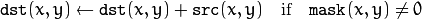
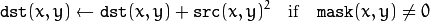
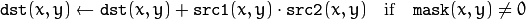
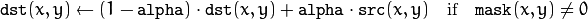
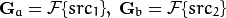
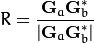
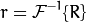
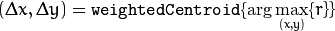

Adds an image to the accumulator.
| Parameters: |
|
|---|
The function adds src or some of its elements to dst :

The function supports multi-channel images. Each channel is processed independently.
The functions accumulate* can be used, for example, to collect statistics of a scene background viewed by a still camera and for the further foreground-background segmentation.
Adds the square of a source image to the accumulator.
| Parameters: |
|
|---|
The function adds the input image src or its selected region, raised to a power of 2, to the accumulator dst :

The function supports multi-channel images. Each channel is processed independently.
Adds the per-element product of two input images to the accumulator.
| Parameters: |
|
|---|
The function adds the product of two images or their selected regions to the accumulator dst :

The function supports multi-channel images. Each channel is processed independently.
See also
Updates a running average.
| Parameters: |
|
|---|
The function calculates the weighted sum of the input image src and the accumulator dst so that dst becomes a running average of a frame sequence:

That is, alpha regulates the update speed (how fast the accumulator “forgets” about earlier images). The function supports multi-channel images. Each channel is processed independently.
See also
The function is used to detect translational shifts that occur between two images. The operation takes advantage of the Fourier shift theorem for detecting the translational shift in the frequency domain. It can be used for fast image registration as well as motion estimation. For more information please see http://en.wikipedia.org/wiki/Phase_correlation .
Calculates the cross-power spectrum of two supplied source arrays. The arrays are padded if needed with getOptimalDFTSize().
| Parameters: |
|
|---|
Return value: detected phase shift (sub-pixel) between the two arrays.
The function performs the following equations
First it applies a Hanning window (see http://en.wikipedia.org/wiki/Hann_function) to each image to remove possible edge effects. This window is cached until the array size changes to speed up processing time.
Next it computes the forward DFTs of each source array:

where
 is the forward DFT.
is the forward DFT.
It then computes the cross-power spectrum of each frequency domain array:

Next the cross-correlation is converted back into the time domain via the inverse DFT:

Finally, it computes the peak location and computes a 5x5 weighted centroid around the peak to achieve sub-pixel accuracy.

If non-zero, the response parameter is computed as the sum of the elements of r within the 5x5 centroid around the peak location. It is normalized to a maximum of 1 (meaning there is a single peak) and will be smaller when there are multiple peaks.
This function computes a Hanning window coefficients in two dimensions. See http://en.wikipedia.org/wiki/Hann_function and http://en.wikipedia.org/wiki/Window_function for more information.
| Parameters: |
|
|---|
An example is shown below:
// create hanning window of size 100x100 and type CV_32F
Mat hann;
createHanningWindow(hann, Size(100, 100), CV_32F);
See also